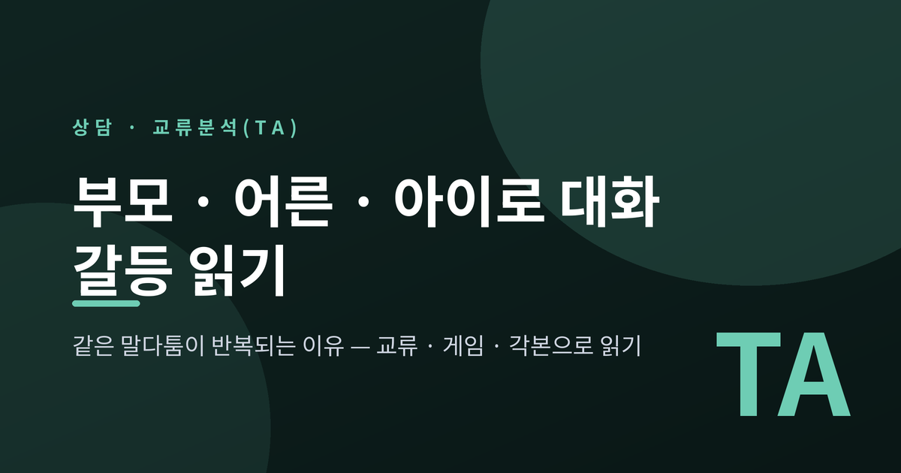
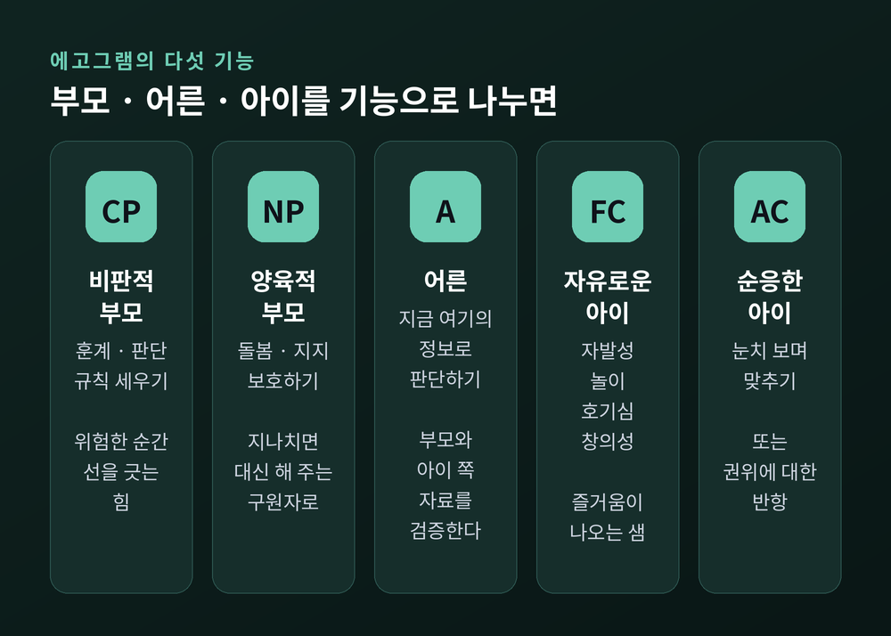
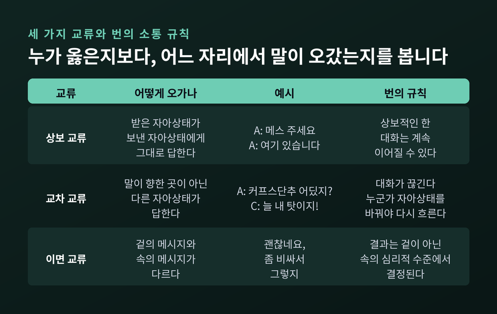
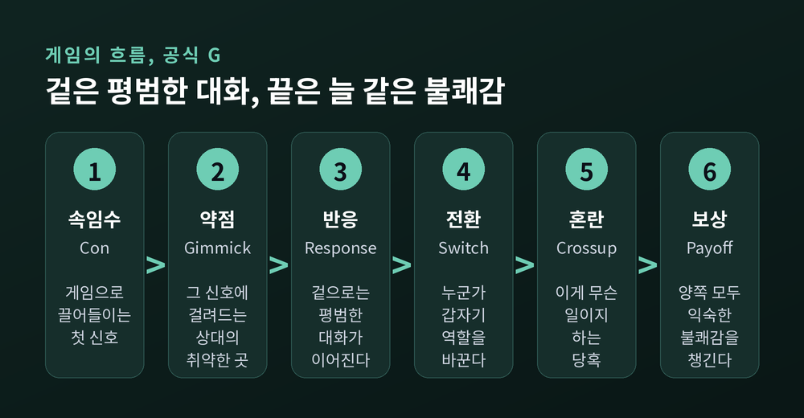
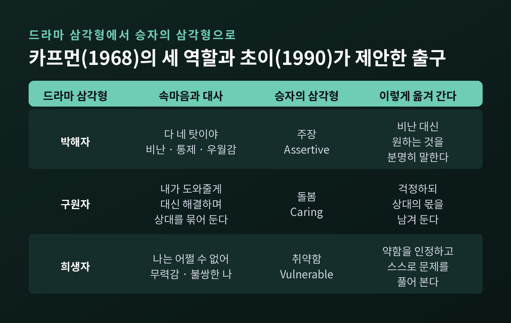
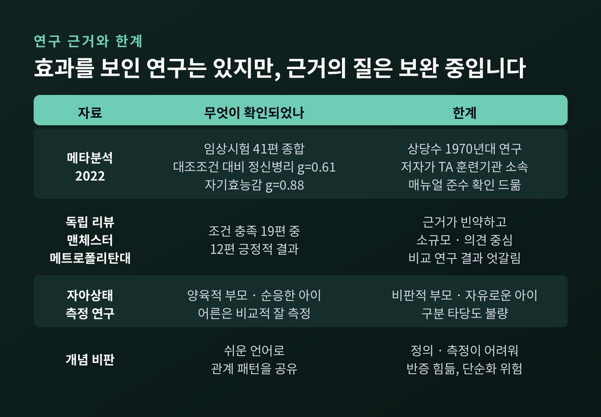

세 줄 요약
이번 글에서는 교류분석, 흔히 TA라고 부르는 상담 이론을 정리해 보겠습니다. "왜 우리는 늘 같은 대목에서 싸울까" 하는 물음에 이 이론이 어떤 지도를 내미는지, 상담실에서는 그 지도를 어떻게 쓰는지 살펴봅니다. 연구 근거와 비판도 함께 적었습니다.
에릭 번은 1910년 캐나다 몬트리올에서 태어났습니다. 맥길대학교에서 의학을 공부했고, 미국으로 건너가 정신과 의사가 되었습니다.
그는 오랫동안 정신분석가가 되려 했습니다. 전쟁이 끝난 뒤 샌프란시스코에서 훈련을 이어 갔고, 발달심리학자 에릭 에릭슨에게 분석을 받기도 했습니다. 그런데 1956년, 15년 가까운 훈련 끝에 연구소는 정식 분석가 인정 대신 몇 년의 추가 훈련을 요구했습니다. 번은 이것을 거절로 받아들였고, 정신분석을 떠났습니다.
그해 말 그는 두 편의 논문을 썼습니다. 둘 다 1957년에 발표되었습니다. 여기서 부모·어른·아이라는 세 자아상태와, 이를 세 개의 원으로 그리는 방식이 처음 등장합니다. 이듬해인 1958년, 「교류분석: 새롭고 효과적인 집단치료 방법」이라는 논문이 학술지에 실리면서 교류분석이라는 이름이 자리를 잡았습니다.
출발점이 된 장면이 하나 있습니다. 번의 유족이 운영하는 공식 사이트에 따르면, 한 35세 변호사 내담자가 이렇게 말했다고 합니다. "저는 사실 변호사가 아니에요. 그냥 어린 소년이에요." 밖에서는 유능한 변호사였던 그가, 상담실에서는 이따금 전혀 다른 사람처럼 말하고 표정을 지었습니다.
번은 한 사람 안에서 두 가지 '존재 방식'이 번갈아 나타난다고 보고, 이를 어른과 아이라고 불렀습니다. 나중에 어린 시절 부모에게서 보았던 모습을 되풀이하는 세 번째 상태를 더해 부모라고 이름 붙였습니다.
번의 방식은 기존 정신분석과 결이 달랐습니다. 환자에게 자기 이야기를 묻기보다, 집단 안에서 오가는 말과 어조, 표정과 몸짓을 관찰했습니다. 프로이트의 이드·자아·초자아는 머릿속 '개념'이지만, 부모·어른·아이는 눈으로 확인할 수 있는 현상이라고 그는 주장했습니다.
1961년 첫 단행본을 냈고, 1964년에는 동료들과 국제교류분석협회(ITAA)를 만들었습니다. 같은 해 나온 『심리 게임(Games People Play)』은 원래 전문가를 위해 쓴 책이었지만 베스트셀러가 되어 500만 부 넘게 팔렸습니다. 번은 1970년, 60세에 세상을 떠났습니다.
교류분석에서 자아상태는 기분 정도의 가벼운 개념이 아닙니다. 국제교류분석협회는 이를 생각과 감정과 행동이 한데 묶인 하나의 완결된 체계라고 설명합니다. 우리는 매 순간 이 셋 중 어느 하나에서 말하고 듣습니다.
부모(Parent) 자아상태는 어린 시절 부모나 부모 역할을 한 어른에게서 보고 들은 태도를 거의 그대로 재현합니다. "모르는 사람과 말하지 마라", "밥은 입을 다물고 씹어라" 같은 말이 대표적입니다. 아이는 그때 이 말들을 따져 보지 못한 채 받아들였습니다.
어른(Adult) 자아상태는 지금 여기의 정보를 모아 판단합니다. 번은 이를 자극을 정보로 바꾸고, 이전 경험에 비추어 처리하는 기능이라고 설명했습니다. 부모와 아이 쪽에서 올라오는 자료가 지금도 맞는지 검증하는 것도 어른의 몫입니다.
아이(Child) 자아상태는 어린 시절의 감정과 욕구, 반응 방식을 다시 경험합니다. 가장 상처받기 쉬운 자리이면서, 동시에 즐거움과 호기심과 창의성이 나오는 샘이기도 합니다.
여기서 주의할 점이 있습니다. 대문자로 쓰는 부모·어른·아이는 실제 부모나 나이 든 성인, 어린이를 뜻하지 않습니다. 쉰 살의 부장도 회의실에서 아이 자아상태로 토라질 수 있고, 열 살 아이도 어른 자아상태로 차분히 문제를 풀 수 있습니다.
1972년 존 듀세이는 이 셋을 기능에 따라 다섯으로 나눈 '에고그램'을 내놓았습니다. 상담 현장에서 지금도 많이 쓰는 구분입니다.

어느 하나가 좋고 나쁜 것은 아닙니다. 비판적 부모는 위험한 순간 단호하게 선을 긋게 해 주고, 순응한 아이는 공동체의 규칙을 지키게 해 줍니다. 문제는 한 상태에 지나치게 머물거나, 상황에 맞지 않는 상태가 튀어나올 때 생깁니다.
번이 초기부터 다룬 개념으로 '오염'도 있습니다. 부모나 아이 쪽의 내용이 어른의 판단에 섞여, 편견이나 오래된 두려움을 사실로 여기게 되는 상태입니다. "남자는 원래 감정 표현을 못 해"라는 말을 현실 판단처럼 믿고 있다면, 부모 자아상태가 어른을 오염시키고 있는지 살펴볼 만합니다.
번은 사람 사이에 오가는 말 한 쌍을 '교류(transaction)'라고 불렀습니다. 한 사람이 말을 건네는 것이 교류 자극, 상대가 그에 답하는 것이 교류 반응입니다. 그리고 이 교류를 세 가지로 나눴습니다.
상보 교류. 말을 받은 자아상태가, 말을 보낸 자아상태에게 그대로 답합니다. 수술 중 외과의가 손을 내밀면 간호사가 메스를 건네는 어른-어른 교류가 그렇습니다. 열이 나는 아이가 물을 달라 하고, 엄마가 물을 가져다주는 장면도 아이-부모의 상보 교류입니다. 번의 첫 번째 규칙은 이렇습니다. 교류가 상보적인 한, 대화는 계속 이어질 수 있다.
교차 교류. 말이 향한 자아상태가 아닌, 다른 자아상태가 답합니다. 번이 든 예가 유명합니다. 남편이 어른 자아상태로 묻습니다. "내 커프스단추 어디 있는지 알아?" 아내의 아이 자아상태가 답합니다. "당신은 늘 모든 걸 내 탓으로 돌리지!" 두 번째 규칙은 교류가 교차되면 대화가 끊기고, 다시 이어지려면 한쪽이나 양쪽이 자아상태를 바꿔야 한다는 것입니다.
이면 교류. 겉으로 오가는 메시지와 속으로 오가는 메시지가 다릅니다. "이 옷 괜찮네요. 좀 비싸서 그렇지." 겉은 어른의 정보 전달이지만, 속으로는 상대의 아이를 건드리는 부모의 목소리가 섞여 있을 수 있습니다. 세 번째 규칙은 이렇습니다. 결과는 겉의 사회적 수준이 아니라 속의 심리적 수준에서 결정된다.

가상의 장면 하나로 대어 보겠습니다. 특정인의 이야기가 아니라 흔한 패턴을 모아 만든 예입니다.
맞벌이 부부가 퇴근 후 식탁에 앉았습니다. 한 사람이 묻습니다. "내일 아이 학원 픽업, 누가 할 수 있어?" 일정을 맞추려는 어른의 질문입니다. 그런데 돌아온 답은 이렇습니다. "또 나야? 나도 내일 바빠." 지친 아이 자아상태가 억울함으로 답한 교차 교류입니다.
그러면 처음 사람도 달라집니다. "내가 언제 너한테만 시켰어? 지난주엔 내가 했잖아." 이번에는 비판적 부모가 나섭니다. 이렇게 되면 대화는 일정 이야기에서 '누가 더 희생하나'로 옮겨 가고, 정작 내일 누가 갈지는 정해지지 않습니다.
교류분석은 여기서 누가 옳은지를 따지지 않습니다. 대신 어느 자리에서 말이 나갔고, 어느 자리에서 받아졌는지를 봅니다. 답한 쪽이 "피곤해서 날카롭게 말했네. 내일은 7시 전엔 어려워. 당신은 어때?"라고 어른으로 돌아오면 교차는 풀립니다. 묻는 쪽이 먼저 "요즘 많이 지쳤지"라고 양육적 부모로 받아 줄 수도 있습니다. 누구든 한 사람이 자리를 바꾸면 대화가 다시 흐릅니다.
한 가지 짚어 둡니다. 번은 말의 내용만이 아니라 어조와 강세, 표정과 몸짓까지 함께 보라고 했습니다. 같은 "알았어"도 어떤 목소리로 나오느냐에 따라 전혀 다른 교류가 됩니다.
교류분석에서 가장 따뜻한 개념을 하나 꼽으라면 스트로크입니다. 국제교류분석협회는 스트로크를 인간관계에서 주고받는 인정의 단위라고 정의합니다. 사람은 살아남고 성장하기 위해 스트로크가 필요하다는 것이 번의 관찰이었습니다.
그 뿌리에는 르네 스피츠의 영아 관찰이 있습니다. 보육시설에서 잘 먹고 깨끗이 돌봄을 받았지만 안아 주고 쓰다듬어 주는 손길이 적었던 아기들은, 신체적·정서적 어려움을 더 많이 겪었습니다. 번은 이 관찰을 어른에게로 넓혔습니다. 어른은 안아 주는 손길 대신 미소, 눈인사, "수고했어요" 한마디 같은 인정으로 그 허기를 채운다고 보았습니다.
스트로크에는 긍정과 부정이 있습니다. 칭찬과 관심이 긍정 스트로크라면, 꾸중과 짜증도 부정적이긴 하지만 스트로크입니다. 교류분석 교과서에서 자주 인용되는 말이 있습니다. 어떤 스트로크든 아무 스트로크도 없는 것보다는 낫다는 것입니다.
이 말은 불편한 진실을 알려 줍니다. 칭찬받을 길이 막힌 사람은 혼나는 쪽으로라도 관심을 끌 수 있다는 뜻이기 때문입니다. 잘해도 아무 말이 없던 집에서, 사고를 칠 때만 부모의 눈길을 받았던 아이를 떠올려 보시면 됩니다.
번의 제자 클로드 스타이너는 1971년 '스트로크 경제'라는 개념을 내놓았습니다. 우리가 어린 시절 스트로크에 관한 다섯 가지 제한 규칙을 배운다는 것입니다.
스타이너는 이 규칙들 때문에 얼마든지 넉넉할 수 있는 스트로크가 귀한 것처럼 여겨진다고 보았습니다. 칭찬을 들으면 손사래부터 치고, 서운해도 말하지 못하는 익숙한 모습이 이 다섯 줄 안에 들어 있습니다.
번의 책 제목이 된 '게임'은 놀이가 아닙니다. 번은 게임을 반복되고, 뚜렷한 심리적 보상으로 끝나는 이면 교류의 연속이라고 정의했습니다. 국제교류분석협회의 설명을 빌리면, 게임은 스트로크를 얻으려는 우회적인 시도지만 결국 부정적인 감정과 자기 인식을 굳히고, 솔직한 생각과 감정 표현을 가립니다.
가장 널리 알려진 게임은 "왜 ~하지 않니? / 네, 하지만"입니다. 한 사람이 고민을 털어놓고, 다른 사람이 해결책을 내놓습니다. "그럼 이렇게 해 보는 건 어때?" "네, 하지만 그건 안 돼요." 제안과 거절이 몇 번 반복되다가, 결국 모두가 지쳐 입을 다뭅니다. 겉으로는 조언을 구하는 어른의 대화지만, 속으로는 "아무도 날 도울 수 없다"는 결론을 확인하는 과정이 흐르고 있습니다.
번은 게임이 한쪽만 이기는 싸움이 아니라고 봤습니다. 겉으로 진 사람까지 포함해 모두가 저마다의 보상을 챙깁니다. 다만 그 보상은 실제 이익이 아니라, 익숙한 불쾌감과 오래된 자기 확신입니다.
번은 이 흐름을 '공식 G'로 정리했습니다.

게임을 더 선명하게 보여 주는 도구가 드라마 삼각형입니다. 번의 제자였던 스티븐 카프먼이 1968년 논문에서 빨간 모자 같은 동화를 예로 들어 소개했습니다. 번은 이를 '카프먼의 삼각형'이라 부르며 발표를 권했다고 합니다.
삼각형의 세 꼭짓점은 박해자, 구원자, 희생자입니다. 박해자는 "다 네 탓이야"라고 말합니다. 구원자는 "내가 도와줄게"라고 나서지만, 상대를 계속 도움이 필요한 사람으로 묶어 둡니다. 희생자는 "나는 어쩔 수 없어"라며 무력감을 호소합니다. 여기서 희생자는 실제 피해자가 아니라, 피해자처럼 느끼고 행동하는 자리를 뜻합니다.
핵심은 역할이 돈다는 점입니다. 앞의 가상 부부에 다시 대어 보겠습니다. 매번 픽업을 도맡아 온 쪽이 구원자로 시작합니다. 몇 달이 지나 지친 그는 어느 날 폭발합니다. "왜 맨날 나만 해야 해!" 구원자가 박해자로 바뀐 순간입니다. 공격받은 상대는 "나도 할 만큼 했는데 이런 취급을 받네"라며 희생자 자리로 옮겨 갑니다. 싸움은 끝났지만, 둘 다 '역시 나만 손해 본다'는 익숙한 결론을 들고 방으로 돌아갑니다.
1990년 에이시 초이는 여기서 빠져나오는 길로 '승자의 삼각형'을 제안했습니다. 희생자 자리에 끌려가면 무력함 대신 취약함을 인정하고 스스로 문제를 풀어 보는 쪽으로, 박해자 자리에서는 비난 대신 원하는 것을 분명히 말하는 쪽으로, 구원자 자리에서는 대신 해결해 주는 대신 걱정하되 상대의 몫을 남겨 두는 쪽으로 옮겨 가자는 것입니다.

게임을 여러 번 되풀이하다 보면 질문이 생깁니다. 왜 나는 늘 비슷한 결말로 가는 걸까. 교류분석은 그 답을 '인생각본'에서 찾습니다.
국제교류분석협회의 설명은 이렇습니다. 역기능적인 행동은 어린 시절 살아남기 위해 내린 자기 제한적 결정에서 나온다. 이 결정들이 모여 삶이 펼쳐지는 방식을 지배하는 전의식적 인생 계획, 곧 인생각본이 된다. 그리고 이 각본을 바꾸는 것이 교류분석 심리치료의 목표다.
1970년대 로버트·메리 굴딩 부부는 어린 시절 부모에게서 전해 받는 전형적인 금지 메시지 열두 가지를 정리했습니다. "존재하지 마라", "가까워지지 마라" 같은 메시지입니다. 그리고 그 메시지 앞에서 아이는 결정을 내립니다. "가까워지면 다치니까, 아무에게도 기대지 말자." 굴딩 부부는 이 결정을 지금의 어른 자리에서 다시 내리는 '재결단' 작업을 발전시켰습니다.
교류분석은 나와 남을 바라보는 기본 자리를 네 가지 인생태도로 나눕니다. 나는 괜찮지 않고 너는 괜찮다, 나는 괜찮고 너는 괜찮지 않다, 둘 다 괜찮지 않다, 그리고 둘 다 괜찮다. 이 마지막 자리가 토머스 해리스의 1967년 책 제목으로 널리 알려진 "나도 OK, 너도 OK"입니다. 프랭클린 언스트는 1971년 이 네 자리를 사분면 격자로 정리했습니다.
국제교류분석협회는 "나도 OK, 너도 OK"를 교류분석의 목적을 가장 잘 드러내는 표현으로 꼽습니다. 모든 사람에게 가치와 존엄이 있고, 그래서 변화하고 성장할 수 있다는 믿음입니다.
예전의 많은 치료가 치료자가 해석을 쥐고 내담자가 그 해석을 받아들이는 구조였다면, 교류분석은 처음부터 계약을 앞세웠습니다. 사람은 자기 삶에서 무엇을 원하는지 스스로 정할 수 있다는 전제에서, 상담자와 내담자가 무엇을 목표로 어떻게 작업할지 명시적으로 합의합니다. 치료뿐 아니라 교육과 조직 컨설팅에서도 같은 원칙을 씁니다.
또 하나의 특징은 개념을 내담자와 공유한다는 점입니다. 부모·어른·아이, 스트로크, 드라마 삼각형 같은 말은 일부러 쉽게 만들어졌습니다. 내담자가 이 언어를 익히면 상담실 밖에서도 "아, 지금 내 아이 자아상태가 대답했구나" 하고 스스로 알아차릴 수 있습니다.
실제 상담의 흐름을 가상의 예로 그려 보면 이렇습니다.
국제교류분석협회는 교류분석이 심리치료뿐 아니라 상담, 교육, 조직개발 분야에서 쓰인다고 소개합니다. 학교에서 교사와 학생의 대화를, 회사에서 상사와 팀원의 관계를 읽는 도구로도 활용됩니다.
인기에 비해 근거는 어떨까요. 두 방향의 평가가 모두 있습니다.
긍정적인 쪽. 2022년 요스 보스와 빌랴나 판 레인은 교류분석 치료를 다룬 임상시험 41편을 모아 체계적 문헌고찰과 탐색적 메타분석을 발표했습니다. 대조조건과 비교했을 때 정신병리 증상(효과크기 g=0.61), 사회적 기능(0.69), 자기효능감(0.88) 등에서 중간에서 큰 수준의 효과가 나타났습니다. 학교나 교도소보다 개인·집단·가족 상담에서 효과가 더 컸습니다. 체계적인 평가, 단계 설정, 심리교육, 체험 중심의 작업이 포함될수록 효과가 좋았고, 내담자와 상담자의 관계가 강력한 예측 요인이었습니다.
조심해야 할 쪽. 같은 논문이 스스로 밝힌 한계도 분명합니다. 연구 상당수가 1970년대의 오래된 연구여서, 지금도 같은 효과가 나는지 새 연구가 필요하다고 저자들은 적었습니다. 치료자의 훈련 수준이나 연구자가 특정 치료에 기울어 있는지 여부는 분석할 수 없었고, 치료 매뉴얼을 제대로 따랐는지 확인한 연구도 드물었습니다. 저자들이 교류분석 훈련 기관 소속이라는 점도 함께 볼 필요가 있습니다.
독립적인 평가는 더 신중합니다. 맨체스터 메트로폴리탄대학교 연구자들의 리뷰는 교류분석의 효과를 뒷받침하는 연구가 빈약하고, 많은 작업이 의견이나 소규모 연구에 머물러 있다고 평가했습니다. 이 리뷰가 인용한 2007년 보고서에 따르면 조건을 충족한 연구 19편 가운데 12편이 긍정적 결과를 보였지만, 다른 치료와 직접 비교한 연구에서는 교류분석이 앞선 경우와 뒤처진 경우가 섞여 있었습니다.

개념 자체에 대한 물음도 있습니다. 자아상태를 재려는 여러 질문지가 만들어졌지만, 리뷰는 모두 타당도에 문제가 있다고 정리했습니다. 한 요인분석 연구에서는 양육적 부모, 순응한 아이, 어른은 비교적 잘 측정되었지만 비판적 부모와 자유로운 아이는 제대로 구분되지 않았습니다. 자아상태나 게임, 각본이 객관적으로 정의하고 측정하기 어려워 반증하기 힘들다는 비판, 복잡한 사람을 몇 개의 칸으로 단순하게 나눌 위험이 있다는 비판도 꾸준히 제기됩니다.
정리하면 이렇게 말할 수 있습니다. 교류분석은 효과를 보여 준 연구들이 있는 상담 이론이지만, 그 근거의 질과 최신성은 아직 보완이 필요합니다.
마지막으로 한 가지만 덧붙이겠습니다.
교류분석이 오래 사랑받아 온 이유는 정교한 이론보다 쉬운 언어에 있다고 생각합니다. 늘 같은 대목에서 꺾이는 대화를 '저 사람 성격 탓'이 아니라 '지금 우리가 어느 자리에서 말하고 있는가'의 문제로 바꿔 보게 해 줍니다. 탓하기를 멈추고 자리를 살피는 순간, 대화에는 다른 길이 생깁니다.
"누가 옳은지보다, 지금 어느 자리에서 말하고 있는지를 먼저 봅니다."
다만 이 글은 이론을 이해하기 위한 소개입니다. 부모·어른·아이라는 말을 배우자나 가족을 판정하는 꼬리표로 쓰면, 그 자체가 또 하나의 게임이 되기 쉽습니다. 이 틀은 상대를 분석하기보다 나 자신의 반응을 돌아보는 데 쓸 때 가장 안전합니다. 반복되는 관계 갈등이나 어린 시절에서 비롯된 패턴 때문에 일상이 힘드시다면, 혼자 해결하려 애쓰기보다 전문 상담사나 정신건강 전문가의 도움을 받아 함께 살펴보시길 권합니다. 어려움이 지속된다면 더욱 그렇습니다.
오늘 저녁에도 같은 말다툼이 시작될 것 같다면, 이 이론은 이렇게 권할 것입니다. 상대를 바꾸려 하기 전에, 내가 먼저 어른의 자리로 한 걸음 옮겨 앉아 보라고.